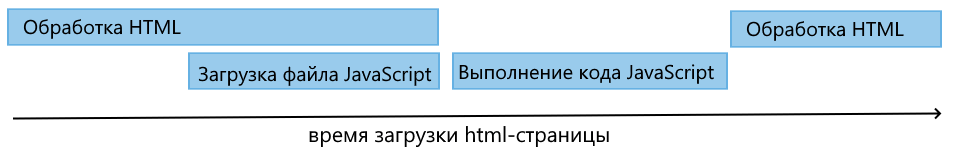
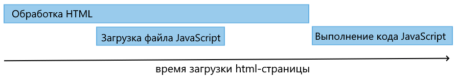

© IGP, январь 2025 г.
Возможно два варианта выполнения программ написанных на JavaScript:
Программный модуль встраивается в HTML страницу. У программы имеется доступ к интерактивным возможностям обезревателя.
<html>
<script>
document.write("Hello world!");
</script>
</html>Когда обозреватель получает веб-страницу с кодом html и javascript, то он ее интерпретирует. Результат интерпретации в виде различных элементов — кнопок, полей ввода, текстовых блоков и т.д., мы видим перед собой в обозревателе. Интерпретация веб-страницы происходит последовательно сверху вниз.
В оборзерателях консоль включается при помощи клавиши F12
Код javascript состоит из инструкций. Каждая инструкция представляет некоторое действие. И для отделения инструкций друг от друга в javascript после инструкции ставится точка с запятой.
Современные браузеры вполне могут различать отдельные инструкции, если они просто располагаются на отдельных строках без точки запятой.
Отдельные инструкции можно можно объединять в блоки кода, которые представляют некоторый код, заключенные между фигурными скобками { блок кода }.
В коде javascript могут использоваться комментарии. Комментарии не обрабатываются интерпретатором javascript и никак не учитываются в работе программы.
Комментарии предназначены для ориентации по коду, чтобы указать, что делает тот или иной код.
Однострочный комментарий
// Это комментарий на одной строке
E = m * c**2; // очень важная формули физики
Многострочный комментарий
/*
Основа релятивистской физики
Формула раскрывает взаимозависимость энергии и массы пространства-материи-времени.
*/
E = m * c**2;
Хорошим тоном является разделение HTML страницы и программы на JavaScript по различным файлам.
HTML. Файл index.html
<html>
<script src="index.js"></script>
</html>
JavaScript. Файл index.js
document.write("Привет мир!!!");
Нередко веб-страницы имеют сложную структуру, какие-то блоки на html-странице, где подключаются файлы javascript, формируются динамически, что может усложнять управление файлами javascript. И для управления загрузкой файла с кодом JavaScript браузер предоставляет два атрибута: async и defer.
async — обработка HTML-кода не будет приостановлена, когда браузер встретит элемент <script>. Файл JavaScript загружается асинхронно.
<script async src="index.js"></script>defer — гарантирует, что обработка HTML-кода не будет приостановлена. Исходный код JavaScript выполняется только после полной обработки HTML-кода.
<script defer src="index.js"></script>Для хранения данных в программе используются переменные и константы.
Переменные предназначены для хранения каких-нибудь временных данных или таких данных, которые в процессе работы могут менять свое значение.
Константы предназначены для хранения неизменных данных, значение которых должно оставаться постоянным в течение всей программы.
const rights=15;
var $name;
let user1="Иванопуло";
Каждая переменная имеет имя.
Имя представляет собой произвольный набор алфавитно-цифровых
символов, знака подчеркивания (_) или знака доллара ($), причем названия не должны начинаться с
цифровых символов.
То есть, можно использовать в названии буквы, цифры, подчеркивание и символ
$. Однако все остальные символы запрещены.
После определения переменной ей можно присвоить какое-либо значение. Для этого применяется оператор присваивания =
Процесс присвоения переменной начального значения называется инициализацией.
let username;
username = "Васисуалий";
let username = "Васисуалий";
let name1 = "Васисуалий", name2 = "Остап";
В JavaScript имеется восемь типов данных:
String: представляет строку
Number: представляет числовое значение
BigInt: предназначен для представления очень больших целых чисел
Boolean: представляет логическое значение true или false
Symbol: представляет уникальное значение, которое часто применяется
для обращения к свойствам сложных объектов
Undefined: представляет одно специальное значение — undefined и
указывает, что значение не установлено
Null: представляет одно специальное значение — null и указывает на
отсутствие значения
Object: представляет комплексный объект
Условные выражения работают с условиями - выражениями, которые возвращают значение типа Boolean - true (условие не верно) или false (условие не верно).
Есть два типа условных операций: операции сравнения и логические операции.
Оператор равенства сравнивает два значения, и если они равны, возвращает true, иначе возвращает false
Оператор тождественности также сравнивает два значения и их тип, и если они равны, возвращает true, иначе возвращает false
Сравнивает два значения, и если они не равны, возвращает true, иначе возвращает false
Сравнивает два значения и их типы, и если они не равны, возвращает true, иначе возвращает false
Сравнивает два значения, и если первое больше второго, то возвращает true, иначе возвращает false
Сравнивает два значения, и если первое меньше второго, то возвращает true, иначе возвращает false
Сравнивает два значения, и если первое больше или равно второму, то возвращает true, иначе возвращает false
Сравнивает два значения, и если первое меньше или равно второму, то возвращает true, иначе возвращает false
true, если хотя бы один из операндов равен true, иначе возвращает false
true, если оба операнда равны true, иначе возвращает false
true, если операнд равен false, в противном случае false
age <= 17 && console.log("Вам меньше 18 лет. Доступ запрещен.");
age > 17 && console.log("Вам больше 17 лет. Доступ разрешен.");
аналогично а = а && b
аналогично а = а || b
[первый_операнд] ? [второй_операнд] : [третий_операнд]
Если первый операнд равен true, то возвращается второй операнд, в противном случае третий.
левый_операнд ?? правый_операндВозвращает значение левого операнда, если оно НЕ равно null и undefined, иначе значение правого операнда.
левый_операнд ??= правый_операндЕсли левый операнд равен null и undefined, то ему присваивается значение правого операнда, иначе левый операнд сохраняет значение.
if(условие){
действия, если условие истинно
}
else{
действия, если условие ложно
}
Или сокращенная форма
if(условие){
некоторые действия
}
switch(переменная){
case значение1:
действие;
break;
case значение1:
действие;
break;
case значение1:
действие;
break;
default:
действие;
break;
}
for ([инициализация]; [условие]; [изменение]){
действия
}
Этот оператор выполняет действия до тех пор, пока условие истинно.
При этом, инициализация выполняется один раз, перед первым выполнением действие, а изменение выполняется каждый раз, после действие
while(условие){
действия
}
Пока условие истинно, повторяется действия.
Если изначально условие ложно, действия не будут выполнены ни разу.
do{
действия
}
while(условие);
Действия повторяется, пока пока условие истинно.
Действия выполняются, хотя бы один раз.
Иногда бывает необходимо выйти из цикла до его завершения. В этом случае используется оператор break.
Если необходимо, по каким-то причинам, пропустить выполнение действия, используется оператор continue.
for (let i=0; i < 6; i++){
if (i === 2) continue;
if (i%3 === 0) break;
console.log(i);
}
for (свойство in объект) {
действия
}
Этот цикл перебирает все свойства объекта.
const person = {name: "Бендер", age: 31};
for(prop in person){
console.log(prop);
}
// Вывод:
// Бендер
// 31
for (свойство of объект) {
действия
}
Предназначен для перебора наборов данных.
const people = ["Бендер", "Паниковский", "Балаганов"];
for(const person of people) {
console.log(person);
}
// Вывод:
// Бендер
// Паниковский
// Балаганов
В процессе работы прогаммы могут возникать ошибки, которые нарушают привычный ход программы или заставляют прервать выполнение.
Язык JavaScript используется конструкция try..catch..finally для обаботки таких ситуаций.
try {
инструкции блока try
}
catch (error) {
инструкции блока catch
}
finally {
инструкции блока finally
}
Если в инструкции блока try возникает ошибка, то выполняются инструкции блока catch, а инструкции блока finally выполняются в любом случае.
Только блок try является обязательным. А один из остальных блоков — catch или finally можно опустить.
throw информация_об_ошибке;
Все ошибки, которые генерируются интерретатором JavaScript, предоставляют объект типа Error, который имеет ряд свойств:
message: сообщение об ошибке
name: тип ошибки
fileName: название файла с кодом JavaScript, где произошла ошибка
lineNumber: строка в файле, где произошла ошибка
columnNumber: столбец в строке, где произошла ошибка
stack: стек ошибки
EvalError: представляет ошибку, которая генерируется при выполнении
глобальной функции eval()
RangeError: ошибка генерируется, если параметр или переменная,
представляют число, которое находится вне некотоого
допустимого диапазона
ReferenceError: ошибка генерируется при обращении к несуществующей
ссылке
SyntaxError: представляет ошибку синтаксиса
TypeError: ошибка генерируется, если значение переменной или
параметра представляют некорректный тип или пр попытке
изменить значение, которое нельзя изменять
URIError: ошибка генерируется при передаче функциям encodeURI()
и decodeURI() некорректных значений
AggregateError: предоставляет ошибку, которая объединяет несколько
возникших ошибок
Функции представляют собой набор инструкций, которые можно повторно вызывать в различных частях программы по имени функции.
Синтаксис определения функции:
function имя_функции(параметры){
// Инструкции
}
Использование функции:
function f(x){
return x**2;
}
y=f(x);
Стрелочные функции позоляют сократить определение обычных функций. Стрелочные функции определяются с помощью оператора =>, перед которым в скобках идут параметры функции, а после — собственно тело функции.
(параметры) => действия_функции
Объект Date позволяет работать с датами и временем в JavaScript.
const currentDate = new Date(); // Текущие дата и время
// количеств милисекунд с 1 января 1970 года 00:00:00 GMT (по Гривичу)
const myDate = new Date(1359270000000);
// Thu Mar 27 2025 00:00:00 GMT+0300 (Москва, стандартное время)
const date1 = new Date("27 March 2025");
const date2 = new Date("3/27/2025");
const date3 = new Date("3 27 2025");
// Tue Dec 25 2025 18:30:20 GMT+0300 (Москва, стандартное время)
const myDate = new Date(2025,11,25,18,30,20,10);
getDate() — возвращает день месяца
getDay() — возвращает день недели (отсчет начинается с 0 — воскресенье,
и последний день 6 — суббота)
getMonth() — возвращает номер месяца (отсчет начинается с нуля,
то есть месяц с номер 0 — январь)
getFullYear() — возвращает год
toDateString() — возвращает полную дату в виде строки
getHours() — возвращает час (от 0 до 23)
getMinutes() — возвращает минуты (от 0 до 59)
getSeconds() — возвращает секунды (от 0 до 59)
getMilliseconds() — возвращает миллисекунды (от 0 до 999)
toTimeString() — возвращает полное время в виде строки
setDate() — установка дня в дате
setMonth() — уставовка месяца (отсчет начинается с нуля, 0 — январь)
setFullYear() — устанавливает год
setHours() — установка часа
setMinutes() — установка минут
setSeconds() — установка секунд
setMilliseconds() — установка миллисекунд
abs() — возвращает абсолютное значение числа
min() — возвращает минимальное значение из набора чисел
max() — возвращает максимальное значение из набора чисел
call() — округляет число до следующего наибольшего целого числа
floor() — округляет число до следующего наименьшего целого числа
round() — округляет число по правилас Математические
random() — возвращает случайное число с плавающей точкой их диапазона от 0 до 1
pow() — возвращает число в определенной степени
sqrt() — возвращает квадратный корень числа
log() — возвращает натуральный логарифм числа
sin() — вычисляет синус угла
cos() — вычисляет косинус угла
tan() — вычисляет тангенс угла
Math.PI (число PI) — 3.141592653589793
Math.SQRT2 (квадратный корень из двух) — 1.4142135623730951
Math.SQRT1_2 (половина от квадратного корня из двух) — 0.7071067811865476
Math.E (число e или число Эйлера) — 2.718281828459045
Math.LN2 (натуральный логарифм числа 2) — 0.6931471805599453
Math.LN10 (натуральный логарифм числа 10) — 2.302585092994046
Math.LOG2E (двоичный логарифм числа e) — 1.4426950408889634
Math.LOG10E (десятичный логарифм числа e) — 0.4342944819032518
const message = "Hello";
// или
const message = new String("Hello");
Длина строки: length
message.length
Повторение строки: repeat()
const message = "hello ";
console.log(message.repeat(3)); // hello hello hello
Поиск в строке: indexOf()/lastIndexOf()
indexOf(str, index)
lastIndexOf(str, index)
const hello = "привет мир. пока мир";
console.log(hello.includes("мир", 5)); // true
console.log(hello.includes("привет", 6)); // false
substring(startIndex, endIndex)
slice(startIndex, endIndex)
substr(startIndex, count)
"Привет Мир".toLowerCase() // привет мир
"Привет Мир".toUpperCase() // ПРИВЕТ МИР
trim() — удаляет начальные и концевые пробелы
trimStart() — удаляет пробел с начала строки
trimEnd() — удаляет пробел с конца строки
trimLeft() — удаляет пробел с левой части строки
trimRight() — удаляет пробел с правой части строки
let hello = "Привет ";
const world = "мир";
hello = hello.concat(world);
console.log(hello); // Привет мир
let hello = "Добрый день";
hello = hello.replace("день", "вечер");
console.log(hello); // Добрый вечер
const message = "Сегодня была прекрасная погода";
const messageParts = message.split(" ");
console.log(messageParts); // ["Сегодня", "была", "прекрасная", "погода"]